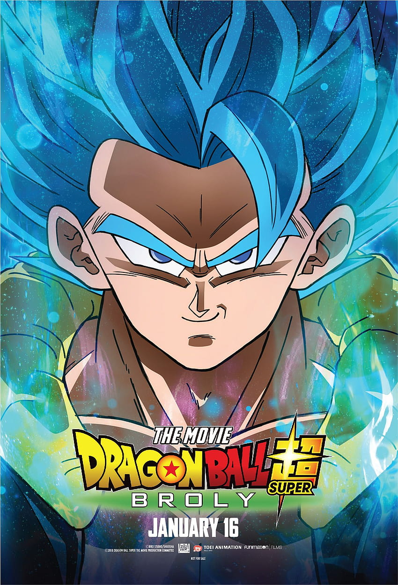
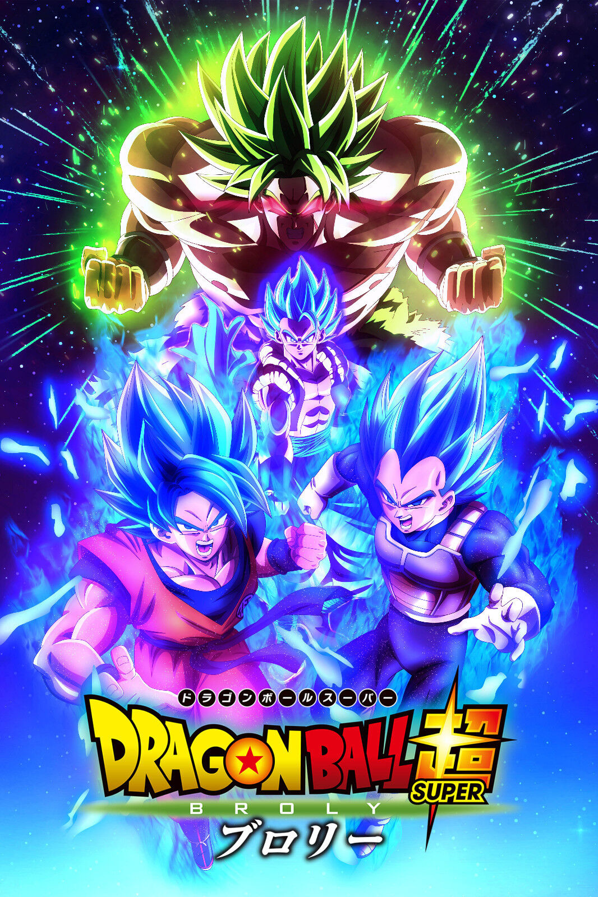
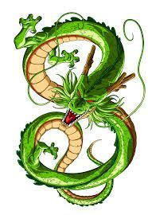
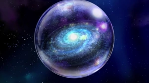

Gogeta (ゴジータ, Gojīta) es el resultado de la fusión saiyana nacida mediante la unión entre Goku y Vegeta realizando la Danza de la Fusión de los metamoranos, existiendo como la contraparte de Vegetto, su Fusión Pothala.
Broly (ブロリー, Burorī, Broli) es un personaje exclusivo de las películas de la serie de anime de Dragon Ball Z. Es un saiyano de raza pura que sobrevivió a la destrucción del Planeta Vegeta junto a su padre Paragus, pero además es un Supersaiyano Legendario, del cual el último surgió hace mil años.

Vegetto (ベジット, Bejitto) es el resultado de la unificación entre Vegeta y Kakarotto mediante los Pothala dados por las deidades Kaio-shin, existiendo como la contraparte de Gogeta, su fusión por la danza metamorana.
Shen Long (神シェン龍ロン, Shenron, Dios Dragón o Dragón Divino) es un dragón que concede deseos, aparece cuando alguien reúne las Dragon Balls de la Tierra y pronuncia el conjuro mágico. Fue creado por Kami a partir de una estatuilla modelada por Mr.

Beerus (ビルス, Birusu), titulado oficialmente como el Dios de la Destrucción Beerus, es un personaje que fue introducido en la película Dragon Ball Z: La Batalla de los Dioses
El Universo 7 (第７宇宙, Dai-nana Uchū, Séptimo Universo), Nuestro Universo (我々の宇宙, Wareware no Uchū), es, como su nombre lo indica, el séptimo de los doce universos